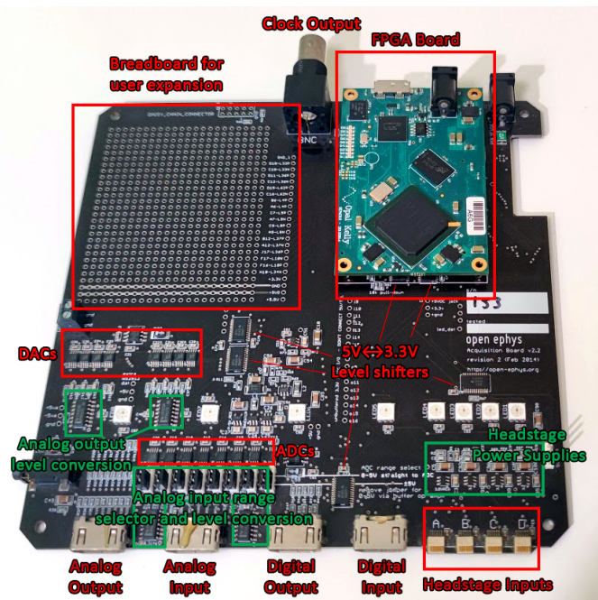

Acquisition Boards¶
What does an acquisition board do?¶
A headstage converts our analog electrode signal to a digital signal, readable by computers, and prevents current being drawn from our cells. Why do we need an acquisition board to collect that data before it reaches our acquisition computer?
1) The acquisition board drives the headstage¶
The headstage does not just stream data of its own accord, but must be driven by a controller. In the case of the Open Ephys Acquisition Board, the headstage and board communicate via SPI (Serial Peripheral Interface). The FPGA (see below) on the Acquisition Board sends SPI commands to the headstages, and the headstages return the values of their channels. Each sampling loop contains 35 cycles and is sent to all attached headstages simultaneously. The first 32 cycles request the values of each neuronal input channel on the headstage. The final 3 are used to configure the headstage, read the auxiliary channels (usually the accelerometer on the headstage), and receive incoming digital or analog signals. Each 35-channel loop results in a single sample of data, which contains the value of all 32 channels as well as the 8 digital and analog inputs. The rate at which the board sends these 35-channel loops is the acquisition frequency of the system.
2) The acquisition board timestamps data¶
We need to know exactly when each signal was acquired in order to organise and interpret the data. Each sample acquired as described above is timestamped with a unique sample counter by the FPGA. This data will be read by the acquisition software in chunks of samples, transmitted via USB. Data from all headstages, as well as incoming digital and analog signals, are collected at the same time and given the same timestamp. If it’s not clear why this is important, read our section on synchronization :ref:refsync.
What is inside¶
Recording electrophysiology requires high channel counts and high-frequency acquisition. This relies on the FPGA (Field Programmable Gate Array) at the heart of the Open Ephys Acquisition Board.
{kind=link}
Because neuronal action potentials have a duration of around 1 ms, we need to acquire at a very high frequency (in the 10-30KHz range) in order to detect them. The acquisition frequency of the system is set by the rate at which the acquisition controller can sends commands. Acquiring high channel counts at these high sampling speeds places heavy requirements on the hardware of the acquisition system. It can not be achieved, for instance, using classic microcontroller units, because they are sequential; they can only execute one command at a time. Though they could, in theory, perform an approximation of multiple, synchronized actions by running steps sequentially at very high speed, this processor speed is limited by power and thermal considerations (S. H. Fuller and L. I. Millett, Computer, 2011).
Instead, we rely on parallel computing, in which computations can be run simultaneously and separately. Though there are various types of parallel devices, few are suitable for acquisition needs. Multicore processors lack enough parallelism, as they can only perform one simultaneous action per core. GPUs can run hundreds of parallel operations, but while they are widely used for processing they lack the hardware resources needed for driving sensors. Field-Programmable Gate Arrays (FPGAs) are integrated circuits featuring configurable digital electronics. By uploading a configuration file called a ‘bit file’, FPGAs can be configured to act as any digital circuit. The circuits configured into an FPGA can run in parallel and independently. This allows separate and simultaneous acquisition, packing and transmission of data.
Adapted from the PhD Thesis of Aarón Cuevas López